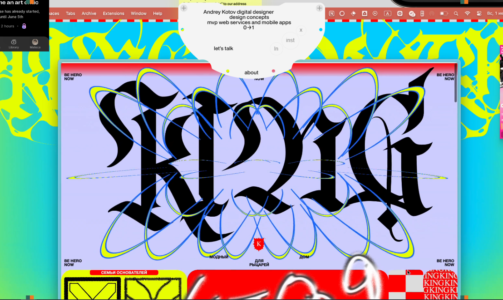

Содержание
Окей, вы прочитали четыре статьи о том, что такое веб-плакат и чем
он отличается от всего остального. А если нет, тогда вернитесь назад
и прочитайте их! Резонный вопрос: а зачем мне это? Зачем дизайнеру
открывать редактор кода, разбираться в CSS-свойствах и выяснять,
почему div не встаёт туда, куда должен? Ответ
складывается из нескольких частей — и начнём мы, пожалуй, с самой
честной.
Потому что это весело
Звучит несерьёзно, но это правда. Веб-плакат — один из немногих форматов, где процесс создания приносит удовольствие сам по себе, а не как побочный эффект от выполненного ТЗ. Вы придумываете тему, которая вам нравится, рисуете макет, который вас вдохновляет, и потом пытаетесь оживить его в коде. Никто не ждёт от вас конверсии, метрик и A/B-тестов. Нет душного менеджера с вечными правками. Есть вы, ваша идея и браузер. Будьте смелее и сломайте вёрстку как только сможете.
Ярослав Субботин, преподаватель Школы дизайна, на вопрос о том, что веб-плакат даёт студентам, отвечает: «Возможность решать задачи, оставаясь в рамках концепций, самовыражаться и делать то, что нравится. И экспериментировать. Максимально экспериментировать». В этом смысле веб-плакат ближе к скетчбуку, чем к рабочему проекту — пространство, где можно пробовать что угодно без страха облажаться.
Есть одна мудрость,которую когда-то поведал мне Ярослав на просмотре: «Когда всё аккуратно собралось — нужно немного похулиганить». Веб-плакат — это формат, где хулиганство не просто допустимо, а поощряется.
Код как инструмент дизайнера
Если посмотреть на рынок, картина довольно однозначная. Знание HTML и CSS упоминается как желательное или обязательное в большинстве вакансий для веб-дизайнеров и продуктовых дизайнеров — и эта доля растёт с каждым годом. Компании ищут людей, которые понимают, как устроен браузер, могут говорить с разработчиками на одном языке и предлагать решения, реалистичные с технической точки зрения.
Но здесь есть тонкость. Изучать код через типовые упражнения — свёрстывать формы, кнопки, карточки товаров — можно, и это тоже работает. Однако дизайнеры думают иначе, чем программисты. Их мышление визуально-пространственное, а не алгоритмическое. И когда дизайнеру дают задачу а-ля сверстай макет по ТЗ, он выполняет её, но не загорается. А когда ему говорят «придумай что хочешь и собери это в коде» — включается совсем другая мотивация.
Веб-плакат работает именно по этой логике. Вы учите те же HTML, CSS и JavaScript, что пригодятся потом на любом проекте, — но учите их через создание чего-то своего. Flexbox осваивается, когда вам нужно выстроить блоки в нужную композицию. Grid — когда макет требует сложной сетки. Keyframes — когда вы хотите, чтобы типографика пульсировала в такт идее. Технология изучается в момент, когда она нужна для реализации задумки, а не в отрыве от неё.
Крутая штука в портфолио
Допустим, вы студент-дизайнер или начинающий специалист. Ваше портфолио — это набор макетов в Figma, может быть, несколько учебных проектов. А теперь представьте, что среди них есть живая, работающая страница с анимациями и интерактивом, которую можно открыть в браузере, пощёлкать, поскроллить. Это производит совершенно другое впечатление и ещё подтверждает ваши базовые знания в веб-вёрстке. Например, студент Школы дизайна, Андрей Котов решил поддержать свой сайт-портфолио не менее крутый и убойным веб-плактом KING
Веб-плакат компактен по объёму — это один HTML-файл, часто с CSS внутри. Его легко опубликовать на GitHub Pages, показать по ссылке, встроить в любое портфолио. И он демонстрирует сразу две вещи: что вы умеете думать визуально и что вы умеете реализовывать свои решения в коде. На рынке, где дизайн инжениринг становится отдельной и всё более востребованной специализацией, такая комбинация навыков работает на вас.

Веб-плакат работает именно по этой логике. Вы учите те же HTML, CSS и JavaScript, что пригодятся потом на любом проекте, — но учите их через создание чего-то своего. Flexbox осваивается, когда вам нужно выстроить блоки в нужную композицию. Grid — когда макет требует сложной сетки. Keyframes — когда вы хотите, чтобы типографика пульсировала в такт идее. Технология изучается в момент, когда она нужна для реализации задумки, а не в отрыве от неё.
Веб-плакат не сделает из вас frontend-разработчика — и не ставит такой цели. Зато он даст базовое понимание того, как работает веб, и уверенность в том, что код — это не магия, а инструмент, с которым вы вполне можете обращаться.
Начнёте видеть веб иначе
Есть ещё один эффект, менее очевидный, но, пожалуй, самый
долгоиграющий. После того как вы сами соберёте хотя бы
один веб-плакат, вы начнёте смотреть на сайты
по-другому. Откроете страницу — и вместо
«красиво / некрасиво» будете замечать: а, вот тут
flexbox с gap, вот тут
keyframes на opacity, а вот тут
hover-эффект через transform. Код перестаёт быть чёрным ящиком и
становится читаемым материалом.
Это меняет то, как вы проектируете. Вы начинаете
рисовать макеты, которые реалистичны для реализации, потому что
понимаете, из чего они будут сделаны. Вы задаёте
разработчику другие вопросы — не «можно ли
так?», а лучше через grid или через
flexbox. Разговор переходит из плоскости
заказчик — исполнитель в плоскость коллег,
говорящих на одном языке.
Собственно, в этом и состоит обещание формата. Веб-плакат — это точка входа. Компактная, весёлая и достаточно свободная, чтобы не отпугнуть. А дальше — дело ваше: можно остаться в формате и создавать экспериментальные штуки ради удовольствия, можно двигаться в сторону фронтенда, можно использовать навыки в продуктовом дизайне. В любом случае, это время, которое точно не пропадёт